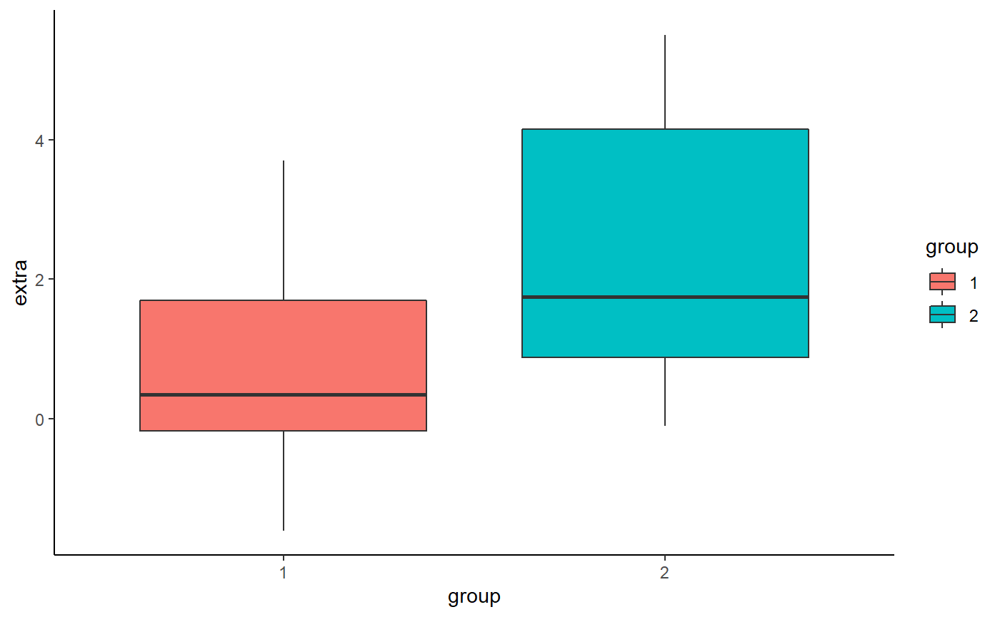
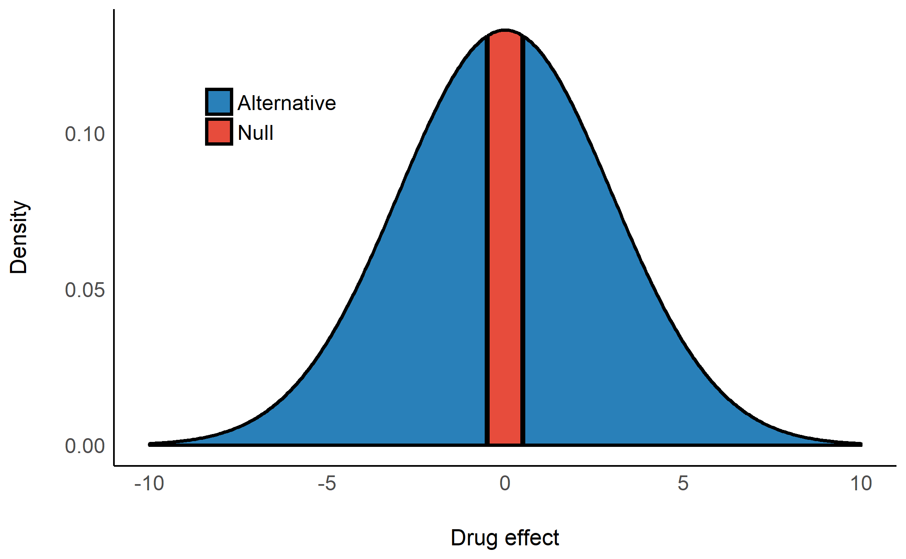
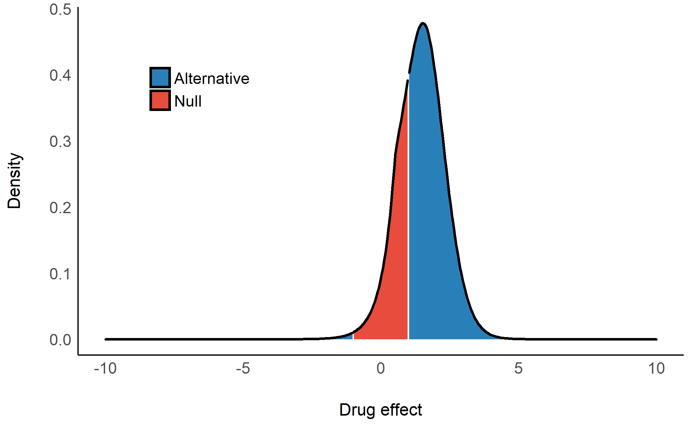
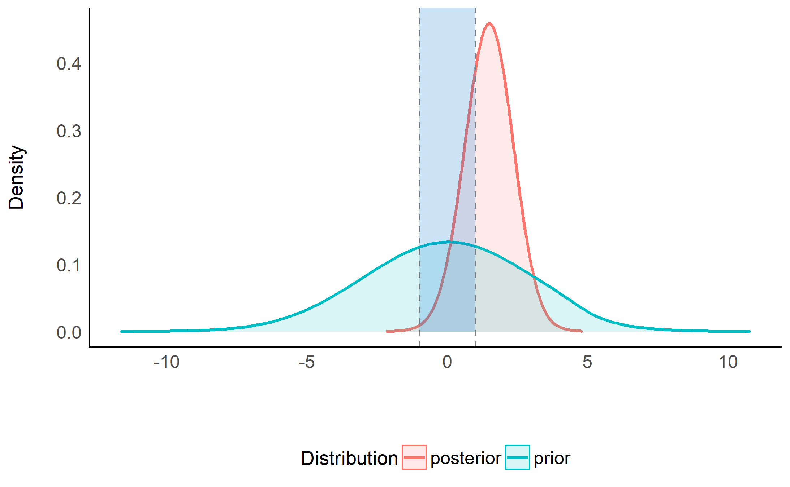
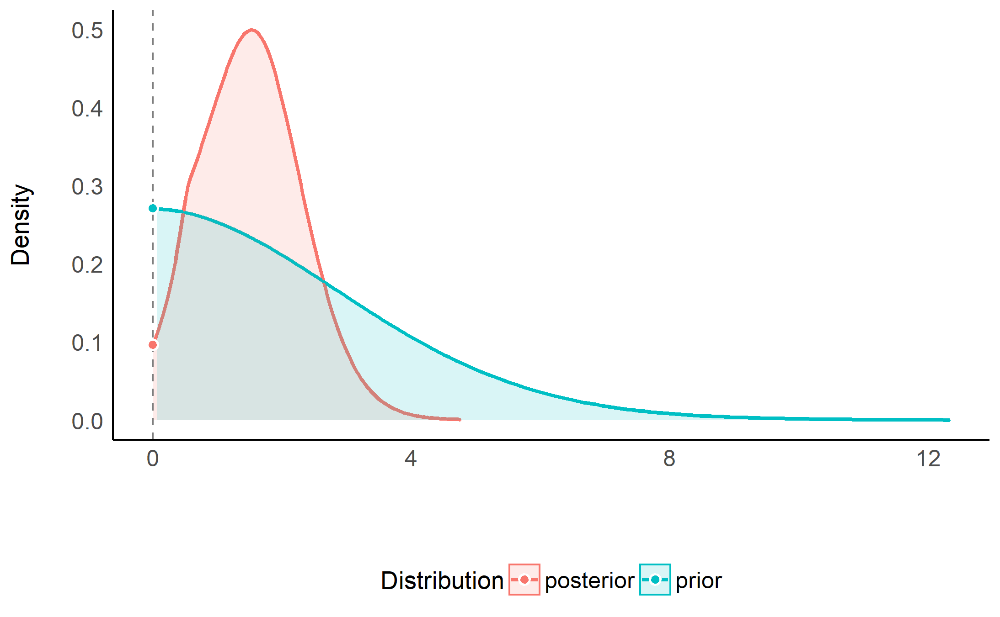
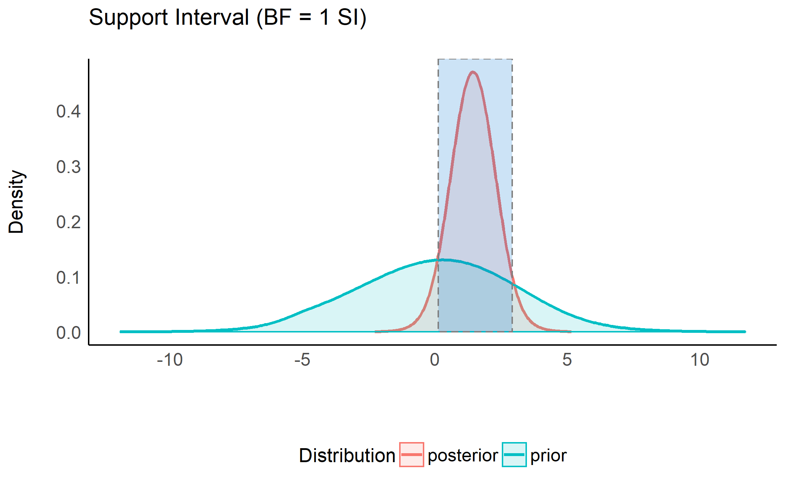
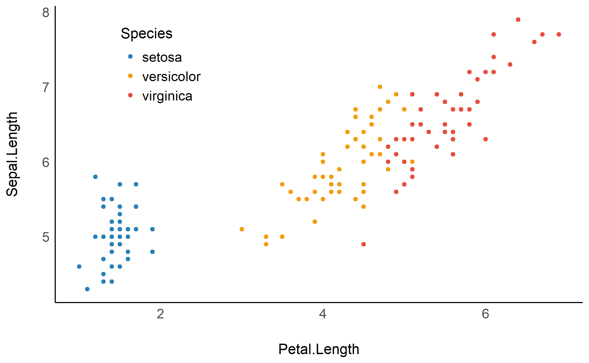
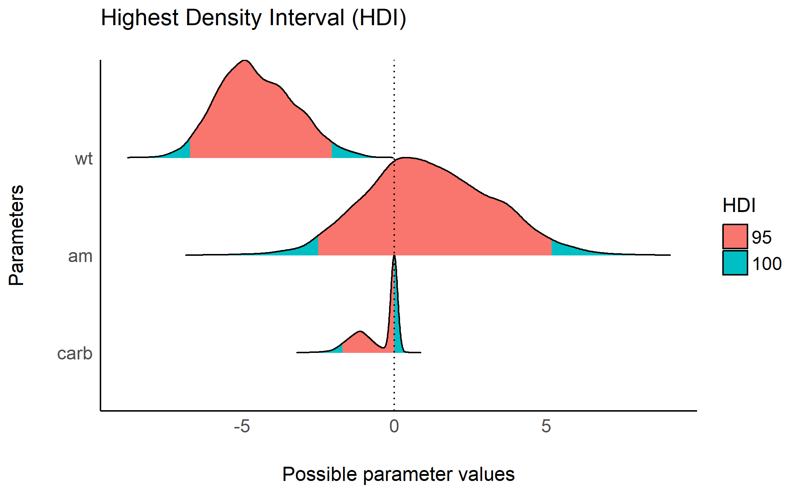
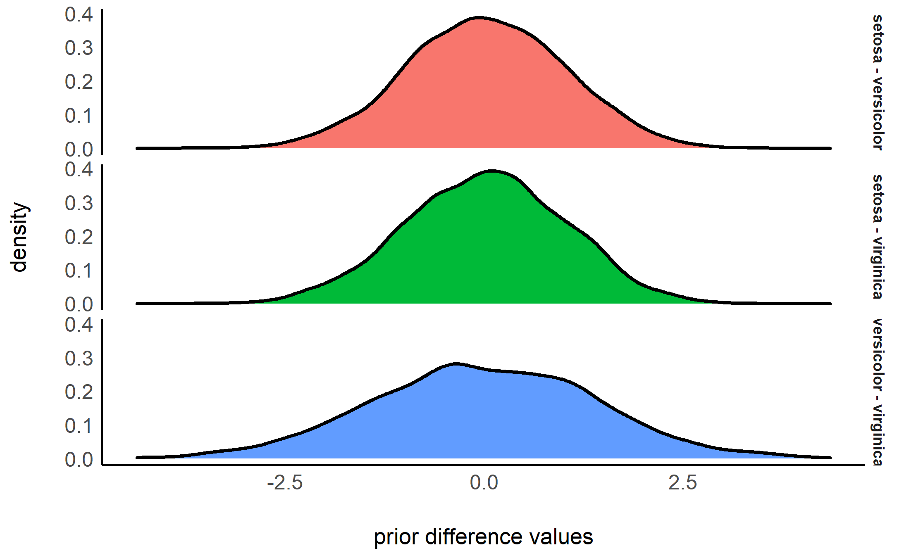
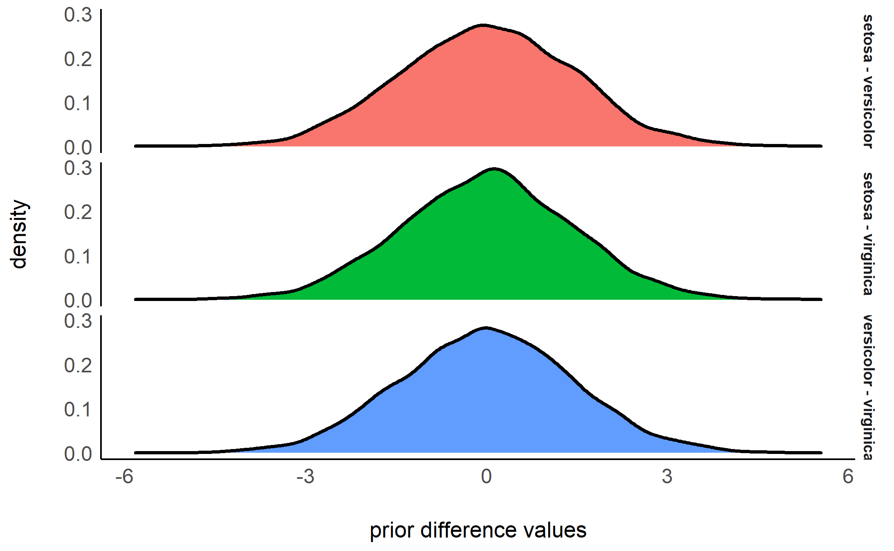

This vignette can be referred to by citing the following:
- Makowski, D., Ben-Shachar, M. S., & Lüdecke, D. (2019). bayestestR: Describing Effects and their Uncertainty, Existence and Significance within the Bayesian Framework. Journal of Open Source Software, 4(40), 1541. https://doi.org/10.21105/joss.01541
- Makowski, D., Ben-Shachar, M. S., Chen, S. H. A., & Lüdecke, D. (2019). Indices of Effect Existence and Significance in the Bayesian Framework. Retrieved from https://doi.org/10.31234/osf.io/2zexr
The adoption of the Bayesian framework for applied statistics, especially in the social and psychological sciences, seems to be developing in two distinct directions. One of the key topics marking their separation is their opinion about the Bayes factor. In short, some authors (e.g., the “Amsterdam school”, led by Wagenmakers) advocate its use and emphasize its qualities as a statistical index, while others point to its limits and prefer, instead, the precise description of posterior distributions (using CIs, ROPEs, etc.).
bayestestR does not take a side in this debate, rather offering tools to help you in whatever analysis you want to achieve. Instead, it strongly supports the notion of an informed choice: discover the methods, try them, understand them, learn about them, and decide for yourself.
Having said that, here’s an introduction to Bayes factors :)
The Bayes Factor
Bayes factors (BFs) are indices of relative evidence of one “model” over another, which can be used in the Bayesian framework as alternatives to classical (frequentist) hypothesis testing indices (such as \(p-values\)).
According to Bayes’ theorem, we can update prior probabilities of some model \(M\) (\(P(M)\)) to posterior probabilities (\(P(M|D)\)) after observing some datum \(D\) by accounting for the likelihood of observing that datum given the model (\(P(D|M)\)):
\[ P(M|D) = \frac{P(D|M)\times P(M)}{P(D)} \]
Using this equation, We can compare the probability-odds of two models:
\[ \frac{P(M_1|D)}{P(M_2|D)} = \frac{P(D|M_1)}{P(D|M_2)} \times \frac{P(M_1)}{P(M_2)} \] Where the left-most term are the posterior odds, the right-most term are the prior odds, and the middle term is the Bayes factor:
\[ BF_{12}=\frac{P(D|M_1)}{P(D|M_2)} \]
Thus, Bayes factors can be seen either as a ratio quantifying the relative likelihood of some observed data by two models as they can be computed by comparing marginal likelihoods, or as the degree by which some prior beliefs about the relative credibility of two models are to be updated as they can be computed by dividing posterior odds by prior odds, as we will soon demonstrate.
Here we provide functions for computing Bayes factors in two different applications: testing single parameters (coefficients) within a model and comparing statistical models themselves.
Testing Models’ Parameters with Bayes Factors
A Bayes factor for a single parameter can be used to answer the question:
Given the observed data, has the null hypothesis of an absence of an effect become more, or less credible?

Bayesian analysis of the Students’ (1908) Sleep data set.
Let’s use the Students’ (1908) Sleep data set (data("sleep")), in which people took some drug and where the researchers measured the extra hours of sleep that they slept afterwards. We will try answering the following question:
given the observed data, has the hypothesis that the drug (the effect of group) has no effect on the numbers of hours of extra sleep (variable extra) become more of less credible?

The bloxplot suggests that the second group has a higher number of hours of extra sleep. By how much? Let’s fit a simple Bayesian linear model, with a prior of \(b_{group} \sim N(0, 3)\):
library(rstanarm)
model <- stan_glm(extra ~ group, data = sleep,
prior = normal(0, 3, autoscale = FALSE))Testing against a null-region
One way of operationlizing the null-hypothesis is by setting a null region, such that an effect that falls within this interval would be practically equivalent to the the null (Kruschke, 2010). In our case, that means defining a range of effects we would consider equal to the drug having no effect at all. We can then compute the prior probability of the drug’s effect falling within this null-region, and the prior probability of the drug’s effect falling outside the null-region to get our prior odds. Say any effect smaller than an hour of extra sleep is practically equivalent to being no effect at all, we would define our prior odds as:
\[ \frac {P(b_{drug} \in [-1, 1])} {P(b_{drug} \notin [-1, 1])} \]
Given our prior has a normal distribution centered at 0 hours with a scale (an SD) of 2.5 hours, our priors would look like this:

and the prior odds would be 5.3.
By looking at the posterior distribution, can now compute the posterior probability of the drug’s effect falling within the null-region, and the posterior probability of the drug’s effect falling outside the null-region to get our posterior odds:
\[ \frac {P(b_{drug} \in [-1,1] | Data)} {P(b_{drug} \notin [-1,1] | Data)} \]

We can see that the center of the posterior distribution has shifted away from 0 (to ~1.5). Likewise, the posterior odds are 4.8 - which seems to favor the effect being non-null, but… does this mean the data support the alternative over the null? Hard to say, since even before the data were observed, the priors already favored the alternative - so we need to take our priors into account here!
Let’s compute the Bayes factor as the change from the prior odds to the posterior odds: \(BF_{10} = Odds_{posterior} / Odds_{prior} = 0.90\)! This BF indicates that the data provide 1/0.90 = 1.11 times more evidence for the effect of the drug being practically nothing than it does for the drug having some clinically significant effect. Thus, although the center of distribution has shifted away from 0, and the posterior distribution seems to favor a non-null effect of the drug, it seems that given the observed data, the probability mass has overall shifted closer to the null interval, making the values in the null interval more probable! (see Non-overlapping Hypotheses in Morey & Rouder, 2011)
Note that interpretation guides for Bayes factors can be found here. All of this can be achieved with the function bayesfactor_parameters(), which computes a Bayes factor for each of the model’s parameters:
> # Bayes Factor (Null-Interval)
>
> Parameter BF
> (Intercept) 0.02
> group2 0.9
>
> * Evidence Against The Null: [-1, 1]We can also plot using the see package:

Testing against the point-null (0)
What if we don’t know what region would be practically equivalent to 0? Or if we just want the null to be exactly zero? Not a problem - as the width of null region shrinks to a point, the change from the prior probability to the posterior probability of the null can be estimated by comparing the the density of the null value between the two distributions.1 This ratio is called the Savage-Dickey ratio, and has the added benefit of also being an approximation of a Bayes factor comparing the estimated model against the a model in which the parameter of interest has been restricted to a point-null:
“[…] the Bayes factor for \(H_0\) versus \(H_1\) could be obtained by analytically integrating out the model parameter \(\theta\). However, the Bayes factor may likewise be obtained by only considering \(H_1\), and dividing the height of the posterior for \(\theta\) by the height of the prior for \(\theta\), at the point of interest.” (Wagenmakers, Lodewyckx, Kuriyal, & Grasman, 2010)
> # Bayes Factor (Savage-Dickey density ratio)
>
> Parameter BF
> group2 1.48
>
> * Evidence Against The Null: [0]
One-sided tests
We can also conduct a directional test (a “one sided” or “one tailed” test) if we have a prior hypotheses about the direction of the effect. This can be done by setting an order restriction on the prior distribution (and thus also on the posterior distribution) of the alternative (Morey & Wagenmakers, 2014). For example, if we have a prior hypothesis that the effect of the drug is an increase in the number of sleep hours, the alternative will be restricted to the region to the right of the null (point or interval):
> # Bayes Factor (Savage-Dickey density ratio)
>
> Parameter BF
> group2 2.82
>
> * Evidence Against The Null: [0]
> * Direction: Right-Sided test
As we can see, given that we have an a priori assumption about the direction of the effect (that the effect is positive), the presence of an effect is 2.8 times more likely than the absence of an effect, given the observed data (or that the data are 2.8 time more probable under \(H_1\) than \(H_0\)). This indicates that, given the observed data, and a priori hypothesis, the posterior mass has shifted away from the null value, giving some evidence against the null (note that a Bayes factor of 2.8 is still considered quite weak evidence).
NOTE: See the Testing Contrasts appendix below.
Support intervals
So far we’ve seen that Bayes factors quantify relative support between competing hypotheses. However, we can also ask:
Which of the possible values of a parameter have increased or decreased credibility upon observing the data?
For example, we’ve seen that the point null has become somewhat less credible after observing the data, but we might also ask which values have gained some credibility given the observed data?. The resulting range of values is called the support interval as it indicates which values are supported by the data (Wagenmakers, Gronau, Dablander, & Etz, 2018). We can do this by once again comparing the prior and posterior distributions and checking where the posterior densities are higher than the prior densities. This can be achieved with the si() function:
> # Support Interval
>
> Parameter BF = 1 SI
> group2 [0.24, 3.02]The argument BF = 1 indicates that we want the interval to contain values that have gained support by a factor of at least 1 (that is, any support at all).
Visually, we can see that the credibility of all the values within this interval has increased (and likewise the credibility of all the values outside this interval has decreased):

We can also see the this support interval (just barely) excludes the point null (0) - whose credibility we’ve already seen has decreased by the observed data. This emphasizes the relationship between the support interval and the Bayes factor:
“The interpretation of such intervals would be analogous to how a frequentist confidence interval contains all the parameter values that would not have been rejected if tested at level \(\alpha\). For instance, a BF = 1/3 support interval encloses all values of theta for which the updating factor is not stronger than 3 against.” (Wagenmakers et al., 2018)
Thus, the choice of BF (the level of support the interval should indicate) depends on what we want our interval to represent:
- A \(BF = 1\) contains values whose credibility has merely not decreased by observing the data.
- A \(BF > 1\) contains values who received more impressive support from the data.
- A \(BF < 1\) contains values whose credibility has not been impressively decreased by observing the data. As stated above, these are also values who, if tested against would produce a Bayes factor larger than \(1/BF\) in support of the alternative.
Comparing Models using Bayes Factors
Bayes factors can also be used to compare statistical models, for which they answer the question:
Under which model are the the observed data more probable?
In other words, which model is more likely to have produced the observed data? This is usually done by comparing the marginal likelihoods of two models. In such a case, the Bayes factor is a measure of the relative evidence of one of the compared models over the other.
Let’s use Bayes factors for model comparison to find a model that best describes the length of an iris’ sepal using the iris data set.
For Bayesian models (brms and rstanarm)
Note: In order to compute Bayes factors for Bayesian models, non-default arguments must be added upon fitting:
-
brmsfitmodels must have been fitted withsave_all_pars = TRUE -
stanregmodels must have been fitted with a defineddiagnostic_file.
Let’s first fit 5 Bayesian regressions with brms to predict Sepal.Length:
library(brms)
m0 <- brm(Sepal.Length ~ 1, # intercept only model
data = iris, save_all_pars = TRUE)
m1 <- brm(Sepal.Length ~ Petal.Length,
data = iris, save_all_pars = TRUE)
m2 <- brm(Sepal.Length ~ Species,
data = iris, save_all_pars = TRUE)
m3 <- brm(Sepal.Length ~ Species + Petal.Length,
data = iris, save_all_pars = TRUE)
m4 <- brm(Sepal.Length ~ Species * Petal.Length,
data = iris, save_all_pars = TRUE)We can now compare these models with the bayesfactor_models() function, using the denominator argument to specify which model all models will be compared against (in this case, the intercept-only model):
> # Bayes Factors for Model Comparison
>
> Model BF
> [1] Petal.Length 3.45e+44
> [2] Species 5.63e+29
> [3] Species + Petal.Length 7.12e+55
> [4] Species * Petal.Length 9.15e+55
>
> * Against Denominator: [5] (Intercept only)
> * Bayes Factor Type: marginal likelihoods (bridgesampling)We can see that the full model is the best model - with \(BF_{\text{m0}}=9\times 10^{55}\) compared to the null (intercept only).
Due to the transitive property of Bayes factors, we can easily change the reference model to the main effects model:
> # Bayes Factors for Model Comparison
>
> Model BF
> [1] Petal.Length 4.84e-12
> [2] Species 7.90e-27
> [4] Species * Petal.Length 1.28
> [5] (Intercept only) 1.40e-56
>
> * Against Denominator: [3] Species + Petal.Length
> * Bayes Factor Type: marginal likelihoods (bridgesampling)As we can see, though the full model is the best, there is hardly any evidence that it is preferable to the main effects model.
We can also change the reference model to the Species model:
> # Bayes Factors for Model Comparison
>
> Model BF
> [1] Petal.Length 6.12e+14
> [3] Species + Petal.Length 1.27e+26
> [4] Species * Petal.Length 1.63e+26
> [5] (Intercept only) 1.78e-30
>
> * Against Denominator: [2] Species
> * Bayes Factor Type: marginal likelihoods (bridgesampling)Notice that in the Bayesian framework the compared models do not need to be nested models, as happened here when we compared the Petal.Length-only model to the Species-only model (something that cannot be done in the frequentists framework, where compared models must be nested in one another).
NOTE: In order to correctly and precisely estimate Bayes Factors, you always need the 4 P’s: Proper Priors,2 and a Plentiful Posterior.3
For Frequentist models via the BIC approximation
It is also possible to compute Bayes factors for the comparison of frequentist models. This is done by comparing BIC measures, allowing a Bayesian comparison of non-nested frequentist models (Wagenmakers, 2007). Let’s try it out on some linear mixed models:
library(lme4)
m0 <- lmer(Sepal.Length ~ (1 | Species), data = iris)
m1 <- lmer(Sepal.Length ~ Petal.Length + (1 | Species), data = iris)
m2 <- lmer(Sepal.Length ~ Petal.Length + (Petal.Length | Species), data = iris)
m3 <- lmer(Sepal.Length ~ Petal.Length + Petal.Width + (Petal.Length | Species), data = iris)
m4 <- lmer(Sepal.Length ~ Petal.Length * Petal.Width + (Petal.Length | Species), data = iris)
bayesfactor_models(m1, m2, m3, m4, denominator = m0)> # Bayes Factors for Model Comparison
>
> Model BF
> [1] Petal.Length + (1 | Species) 8.24e+24
> [2] Petal.Length + (Petal.Length | Species) 4.77e+23
> [3] Petal.Length + Petal.Width + (Petal.Length | Species) 1.52e+22
> [4] Petal.Length * Petal.Width + (Petal.Length | Species) 5.93e+20
>
> * Against Denominator: [5] 1 + (1 | Species)
> * Bayes Factor Type: BIC approximationOrder restricted models
As stated above when discussing one-sided hypothesis tests, we can create new models by imposing order restrictions on a given model. For example, consider the following model, in which we predict the length of an iris’ sepal from the length of its petal, as well as from its species, with a prior of \(b_{petal} \sim N(0,2)\) \(b_{versicolors}\ \&\ b_{virginica} \sim N(0,1.2)\):
iris_model <- stan_glm(Sepal.Length ~ Species + Petal.Length,
data = iris,
prior = normal(0, c(2, 1.2, 1.2), autoscale = FALSE))These priors are unrestricted - that is, all values between \(-\infty\) and \(\infty\) of all parameters in the model have some non-zero credibility (no matter how small; this is true for both the prior and posterior distribution). Subsequently, a priori the ordering of the parameters relating to the iris species can have any ordering, such that (a priori) setosa can have larger sepals than virginica, but it is also possible for virginica to have larger sepals than setosa!
Does it make sense to let our priors cover all of these possibilities? That depends on our prior knowledge or hypotheses. For example, even a novice botanist will assume that it is unlikely that petal length will be negatively associated with sepal length - an iris with longer petals is likely larger, and thus will also have a longer sepal. And an expert botanist will perhaps assume that setosas have smaller sepals than both versicolors and virginica. These priors can be formulated as restricted priors (Morey, 2015; Morey & Rouder, 2011):
- The novice botanist: \(b_{petal} > 0\)
- The expert botanist: \(b_{versicolors} > 0\ \&\ b_{virginica} > 0\)
By testing these restrictions on prior and posterior samples, we can see how the probabilities of the restricted distributions change after observing the data. This can be achieved with bayesfactor_restricted(), that compute a Bayes factor for these restricted model vs the unrestricted model. Let’s first specify these restrictions as logical conditions:
Let’s test these hypotheses:
> # Bayes Factor (Order-Restriction)
>
> Hypothesis P(Prior) P(Posterior)
> Petal.Length > 0 0.50 1
> (Speciesversicolor > 0) & (Speciesvirginica > 0) 0.24 0
> BF
> 2.02
> 0.00e+00
>
> * Bayes factors for the restricted model vs. the un-restricted model.We can see that the novice botanist’s hypothesis gets a Bayes factor of ~2, indicating the data provides twice as much evidence for a model in which petal length is restricted to be positively associated with sepal length than for a model with not such restriction.
What about our expert botanist? He seems to have failed miserably, with a BF favoring the unrestricted model many many times over (\(BF\gg1,000\)). How is this possible? It seems that when controlling for petal length, versicolor and virginica actually have shorter sepals!

Note that these Bayes factors compare the restricted model to the unrestricted model. If we wanted to compare the restricted model to the null model, we could use the transitive property of Bayes factors like so:
\[ BF_{restricted / NULL} = \frac {BF_{restricted / un-restricted}} {BF_{un-restricted / NULL}} \]
Because these restrictions are on the prior distribution, they are only appropriate for testing pre-planned (a priori) hypotheses, and should not be used for any post hoc comparisons (Morey, 2015).
NOTE: See the Specifying Correct Priors for Factors with More Than 2 Levels appendix below.
Bayesian Model Averaging
In the previous section we discussed the direct comparison of two models to determine if an effect is supported by the data. However, in many cases there are too many models to consider or perhaps it is not straightforward which models we should compare to determine if an effect is supported by the data. For such cases we can use Bayesian model averaging (BMA) to determine the support provided by the data for a parameter or term across many models.
Inclusion Bayes factors
Inclusion Bayes factors answer the question:
Are the observed data more probable under models with a particular predictor, than they are under models without that particular predictor?
In other words, on average - are models with predictor \(X\) more likely to have produced the observed data than models without predictor \(X\)?4
Since each model has a prior probability, it is possible to sum the prior probability of all models that include a predictor of interest (the prior inclusion probability), and of all models that do not include that predictor (the prior exclusion probability). After the data are observed, and each model is assigned a posterior probability, we can similarly consider the sums of the posterior models’ probabilities to obtain the posterior inclusion probability and the posterior exclusion probability. Once again, the change from prior inclusion odds to the posterior inclusion odds is the Inclusion Bayes factor (“\(BF_{Inclusion}\)”; Clyde, Ghosh, & Littman, 2011).
Lets use the brms example from above:
> # Inclusion Bayes Factors (Model Averaged)
>
> Pr(prior) Pr(posterior) Inclusion BF
> Petal.Length 0.6 1.00 1.93e+26
> Species 0.6 1.00 3.15e+11
> Petal.Length:Species 0.2 0.56 5.14
>
> * Compared among: all models
> * Priors odds: uniform-equalIf we examine the interaction term’s inclusion Bayes factor, we can see that across all 5 models, a model with the interaction term (Species:Petal.Length) is on average 5 times more likely than a model without the interaction term. Note that Species, a factor represented in the model with several parameters, gets a single Bayes factor - inclusion Bayes factors are given per predictor!
We can also compare only matched models - such that averaging is done only across models that (1) do not include any interactions with the predictor of interest; (2) for interaction predictors, averaging is done only across models that contain the main effect from which the interaction predictor is comprised (see explanation for why you might want to do this here).
> # Inclusion Bayes Factors (Model Averaged)
>
> Pr(prior) Pr(posterior) Inclusion BF
> Petal.Length 0.4 0.44 1.27e+26
> Species 0.4 0.44 2.07e+11
> Petal.Length:Species 0.2 0.56 1.28
>
> * Compared among: matched models only
> * Priors odds: uniform-equalComparison with JASP
bayesfactor_inclusion() is meant to provide Bayes Factors per predictor, similar to JASP’s Effects option. Let’s compare the two:
- Across all models:
library(BayesFactor)
data(ToothGrowth)
ToothGrowth$dose <- as.factor(ToothGrowth$dose)
BF_ToothGrowth <- anovaBF(len ~ dose*supp, ToothGrowth, progress = FALSE)
bayesfactor_inclusion(BF_ToothGrowth)> # Inclusion Bayes Factors (Model Averaged)
>
> Pr(prior) Pr(posterior) Inclusion BF
> supp 0.6 1.00 140.99
> dose 0.6 1.00 3.21e+14
> dose:supp 0.2 0.72 10.12
>
> * Compared among: all models
> * Priors odds: uniform-equal
- Across matched models:
> # Inclusion Bayes Factors (Model Averaged)
>
> Pr(prior) Pr(posterior) Inclusion BF
> supp 0.4 0.28 59.19
> dose 0.4 0.28 1.36e+14
> dose:supp 0.2 0.72 2.57
>
> * Compared among: matched models only
> * Priors odds: uniform-equal
- With Nuisance Effects:
We’ll add dose to the null model in JASP, and do the same in R:
BF_ToothGrowth_against_dose <- BF_ToothGrowth[3:4]/BF_ToothGrowth[2] # OR:
# update(bayesfactor_models(BF_ToothGrowth),
# subset = c(4, 5),
# reference = 3)
BF_ToothGrowth_against_dose> Bayes factor analysis
> --------------
> [1] supp + dose : 59 ±4.5%
> [2] supp + dose + supp:dose : 152 ±1.5%
>
> Against denominator:
> len ~ dose
> ---
> Bayes factor type: BFlinearModel, JZS> # Inclusion Bayes Factors (Model Averaged)
>
> Pr(prior) Pr(posterior) Inclusion BF
> dose 1.00 1.00 NaN
> supp 0.67 1.00 105.74
> dose:supp 0.33 0.72 5.06
>
> * Compared among: all models
> * Priors odds: uniform-equal
Averaging posteriors
Similar to how we can average evidence for a predictor across models, we can also average the posterior estimate across models. One situation in which this is useful is situations where Bayes factors seem to support a null effect, yet the HDI of the alternative excludes the null value (also see si() described above). For example, looking at Motor Trend Car Road Tests (the mtcars dataset), we would naturally predict miles/gallon (mpg) from transition type (am) and weight (wt), but what about number of carburetors (carb)? Is this a good predictor?
We can determine this by comparing the following models:
mod <- stan_glm(mpg ~ wt + am,
data = mtcars,
prior = normal(0, c(10,10), autoscale = FALSE),
diagnostic_file = file.path(tempdir(), "df1.csv"))
mod_carb <- stan_glm(mpg ~ wt + am + carb,
data = mtcars,
prior = normal(0, c(10,10,20), autoscale = FALSE),
diagnostic_file = file.path(tempdir(), "df0.csv"))
bayesfactor_models(mod_carb, denominator = mod)> # Bayes Factors for Model Comparison
>
> Model BF
> [1] wt + am + carb 0.82
>
> * Against Denominator: [2] wt + am
> * Bayes Factor Type: marginal likelihoods (bridgesampling)It seems that the model without carb as a predictor is \(1/BF=1.2\) times more likely than the model with carb as a predictor. We might then assume that in the latter model, the HDI will include the point-null value of 0 effect, to also indicate the credibility of the null in the posterior. However, this is not the case:
> # Highest Density Interval
>
> Parameter 95% HDI
> (Intercept) [28.29, 40.52]
> wt [-5.46, -1.61]
> am [-0.93, 5.84]
> carb [-2.01, -0.32]How can this be? By estimating the HDI of the effect for carb in the full model, we are acting under the assumption that that model is correct. However, as we’ve just seen, both models are practically tied, and in fact it was the no-carb model, in which the effect for carb is fixed at 0, that was slightly more supported by the data. If this is the case why limit our estimation of the effect just to one model? (Bergh, Haaf, Ly, Rouder, & Wagenmakers, 2019).
Using Bayesian model averaging, we can combine the posteriors samples from several models, weighted by the models’ marginal likelihood (via the bayesfactor_models() function). If some parameter is part of some of the models but is missing from others, it is assumed to be fixed a 0. This results in a posterior distribution across several models, which we can now treat like any posterior distribution, and estimate the HDI.
> # Highest Density Interval
>
> Parameter 95% HDI
> (Intercept) [28.99, 42.75]
> wt [-6.62, -1.93]
> am [-2.65, 5.32]
> carb [-1.71, 0.00]
We can see that across both models under consideration, the posterior of the carb effect is almost equally weighted between the alternative model and the null model - as represented by about half of the posterior mass concentrated at 0 - which makes sense as both models were almost equally supported by the data. We can also see that across both models, that now the HDI does contain 0. Thus we have resolved the conflict between the Bayes factor and the HDI (Rouder, Haaf, & Vandekerckhove, 2018)!
Note that parameters might play different roles across different models; For example, the parameter A plays a different role in the model Y ~ A + B (where it is a main effect) than it does in the model Y ~ A + B + A:B (where it is a simple effect). In many cases centering of predictors (mean subtracting for continuous variables, and effects coding via contr.sum or orthonormal coding via contr.bayes for factors) can in some cases reduce this issue.
Appendices
Testing contrasts (with emmeans / modelbased)
Besides testing parameter bayesfactor_parameters() can be used to test any estimate based on the prior and posterior distribution of the estimate. One way to achieve this is with a mix of bayesfactor_parameters() + emmeans to test Bayesian contrasts.
For example, in the sleep example from above, we can estimate the group means and the difference between them:
library(emmeans)
groups <- emmeans(model, ~ group)
group_diff <- pairs(groups)
(groups_all <- rbind(groups, group_diff))> group contrast emmean lower.HPD upper.HPD
> 1 . 0.82 -0.4 2.1
> 2 . 2.28 1.1 3.5
> . 1 - 2 -1.46 -3.2 0.2
>
> Point estimate displayed: median
> HPD interval probability: 0.95> # Bayes Factor (Savage-Dickey density ratio)
>
> Parameter BF
> 1, . 0.07
> 2, . 8.63
> ., 1 - 2 1.36
>
> * Evidence Against The Null: [0]That is strong evidence for the mean of group 1 being 0, and for group 2 for not being 0, but hardly any evidence for the difference between them being not 0. Conflict? Uncertainty? That is the Bayesian way!
We can also use the easystats’ modelbased package to compute Bayes factors for contrasts:
> Level1 | Level2 | Median | 89% CI | BF | Median (std.)
> ----------------------------------------------------------------
> 1 | 2 | -1.46 | [-2.86, -0.13] | 1.36 | -0.72NOTE: See the Specifying Correct Priors for Factors with More Than 2 Levels section below.
Specifying correct priors for factors
This section introduces the biased priors obtained when using the common effects factor coding (contr.sum) or dummy factor coding (contr.treatment), and the solution of using orthonormal factor coding (contr.bayes) (as outlined in Rouder, Morey, Speckman, & Province, 2012, sec. 7.2). Specifically, special care should be taken when working with factors which have 3 or more levels.
Contrasts (and marginal means)
The effects factor coding commonly used in factorial analysis carries a hidden bias when it is applies to Bayesian priors. For example, if we want to test all pairwise differences between 3 levels of the same factor, we would expect all a priori differences to have the same distribution, but…
For our example, we will be test all prior pairwise differences between the 3 species in the iris data-set.
contrasts(iris$Species) <- contr.sum
fit_sum <- stan_glm(Sepal.Length ~ Species, data = iris,
prior = normal(0, c(1, 1), autoscale = FALSE),
prior_PD = TRUE, # sample priors
family = gaussian())
pairs_sum <- pairs(emmeans(fit_sum, ~ Species))
pairs_sum> contrast estimate lower.HPD upper.HPD
> setosa - versicolor 0.031 -2.7 3.0
> setosa - virginica 0.016 -4.1 4.7
> versicolor - virginica 0.042 -4.1 4.4
>
> Point estimate displayed: median
> HPD interval probability: 0.95
We can see that the though the prior estimate for all 3 pairwise contrasts is ~0, the scale / HDI is much more narrow for the prior of the setosa - versicolor contrast!
What happened???
This is caused by an inherent bias in the priors introduced by the effects coding (it’s even worse with the default treatment coding, because the prior for the intercept is usually drastically different from the effect’s parameters). And since it affects the priors, this bias will also bias the the Bayes factors over / understating evidence for some contrasts over others!
The solution is to use orthonormal factor coding, a-la contr.bayes, which can either specify this factor coding per-factor:
Or you can set it globally:
Let’s again estimate the prior differences:
contrasts(iris$Species) <- contr.bayes
fit_bayes <- stan_glm(Sepal.Length ~ Species, data = iris,
prior = normal(0, c(1, 1), autoscale = FALSE),
prior_PD = TRUE, # sample priors
family = gaussian())
pairs_bayes <- pairs(emmeans(fit_bayes, ~ Species))
pairs_bayes> contrast estimate lower.HPD upper.HPD
> setosa - versicolor 0.0116 -2.65 2.92
> setosa - virginica -0.0024 -2.67 2.66
> versicolor - virginica 0.0150 -2.77 2.62
>
> Point estimate displayed: median
> HPD interval probability: 0.95
We can see that using this coding scheme, we have equal priors on all pairwise contrasts.
Order restrictions
This bias also affect order restrictions involving 3 or more levels. For example, if we want to test an order restriction among A, B, and C, the a priori probability of obtaining the order A > C > B is 1/6 (reach back to intro to stats year 1), but…
For our example, we will be interested in the following order restrictions in the iris data-set (each line is a separate restriction):
hyp <- c(
# comparing 2 levels
"setosa < versicolor",
"setosa < virginica",
"versicolor < virginica",
# comparing 3 (or more) levels
"setosa < virginica & virginica < versicolor",
"virginica < setosa & setosa < versicolor",
"setosa < versicolor & versicolor < virginica"
)With the default factor coding, this looks like this:
contrasts(iris$Species) <- contr.sum
fit_sum <- stan_glm(Sepal.Length ~ Species, data = iris,
prior = normal(0, c(1, 1), autoscale = FALSE),
family = gaussian())
em_sum <- emmeans(fit_sum, ~ Species) # the posterior marginal means
bayesfactor_restricted(em_sum, fit_sum, hypothesis = hyp)> # Bayes Factor (Order-Restriction)
>
> Hypothesis P(Prior) P(Posterior)
> setosa < versicolor 0.51 1
> setosa < virginica 0.51 1
> versicolor < virginica 0.50 1
> setosa < virginica & virginica < versicolor 0.10 0
> virginica < setosa & setosa < versicolor 0.20 0
> setosa < versicolor & versicolor < virginica 0.20 1
> BF
> 1.97
> 1.97
> 1.99
> 0.00e+00
> 0.00e+00
> 4.94
>
> * Bayes factors for the restricted model vs. the un-restricted model.What happened???
1. The comparison of 2 levels all have a prior of ~0.5, as expected. 2. The comparison of 3 levels has different priors, depending on the order restriction - i.e. some orders are a priori more likely than others!!!
Again, this is solved by using the orthonormal factor coding (from above).
contrasts(iris$Species) <- contr.bayes
fit_bayes <- stan_glm(Sepal.Length ~ Species, data = iris,
prior = normal(0, c(1, 1), autoscale = FALSE),
family = gaussian())
em_bayes <- emmeans(fit_sum, ~ Species) # the posterior marginal means
bayesfactor_restricted(em_bayes, fit_sum, hypothesis = hyp)> # Bayes Factor (Order-Restriction)
>
> Hypothesis P(Prior) P(Posterior)
> setosa < versicolor 0.50 1
> setosa < virginica 0.50 1
> versicolor < virginica 0.50 1
> setosa < virginica & virginica < versicolor 0.17 0
> virginica < setosa & setosa < versicolor 0.16 0
> setosa < versicolor & versicolor < virginica 0.16 1
> BF
> 2.02
> 2.01
> 1.98
> 0.00e+00
> 0.00e+00
> 6.11
>
> * Bayes factors for the restricted model vs. the un-restricted model.Conclusion
When comparing the results from the two factor coding schemes, we find:
1. In both cases, the estimated (posterior) means are quite similar (if not identical).
2. The priors and Bayes factors differ between the two schemes.
3. Only with contr.bayes, the prior distribution of the difference or the order of 3 (or more) means is balanced.
References
Bergh, D. van den, Haaf, J. M., Ly, A., Rouder, J. N., & Wagenmakers, E.-J. (2019). A cautionary note on estimating effect size.
Clyde, M. A., Ghosh, J., & Littman, M. L. (2011). Bayesian adaptive sampling for variable selection and model averaging. Journal of Computational and Graphical Statistics, 20(1), 80–101.
Kruschke, J. K. (2010). What to believe: Bayesian methods for data analysis. Trends in Cognitive Sciences, 14(7), 293–300.
Morey, R. D. (2015). Multiple comparisons with bayesfactor, part 2 – order restrictions. Retrieved from https://richarddmorey.org/category/order-restrictions/
Morey, R. D., & Rouder, J. N. (2011). Bayes factor approaches for testing interval null hypotheses. Psychological Methods, 16(4), 406.
Morey, R. D., & Wagenmakers, E.-J. (2014). Simple relation between bayesian order-restricted and point-null hypothesis tests. Statistics & Probability Letters, 92, 121–124.
Rouder, J. N., Haaf, J. M., & Vandekerckhove, J. (2018). Bayesian inference for psychology, part iv: Parameter estimation and bayes factors. Psychonomic Bulletin & Review, 25(1), 102–113.
Rouder, J. N., Morey, R. D., Speckman, P. L., & Province, J. M. (2012). Default bayes factors for anova designs. Journal of Mathematical Psychology, 56(5), 356–374.
Wagenmakers, E.-J. (2007). A practical solution to the pervasive problems ofp values. Psychonomic Bulletin & Review, 14(5), 779–804.
Wagenmakers, E.-J., Gronau, Q. F., Dablander, F., & Etz, A. (2018). The support interval. https://doi.org/10.31234/osf.io/zwnxb
Wagenmakers, E.-J., Lodewyckx, T., Kuriyal, H., & Grasman, R. (2010). Bayesian hypothesis testing for psychologists: A tutorial on the savage–dickey method. Cognitive Psychology, 60(3), 158–189.
Note that as the width of null interval shrinks to zero, the prior probability and posterior probability of the alternative tends towards 1.00.↩
Robert, 2016; Kass & Raftery, 1993; Fernández, Ley, & Steel, 2001↩
A model without predictor \(X\) can be thought of as a model in which the parameter(s) of the predictor have been restricted to a null-point of 0.↩